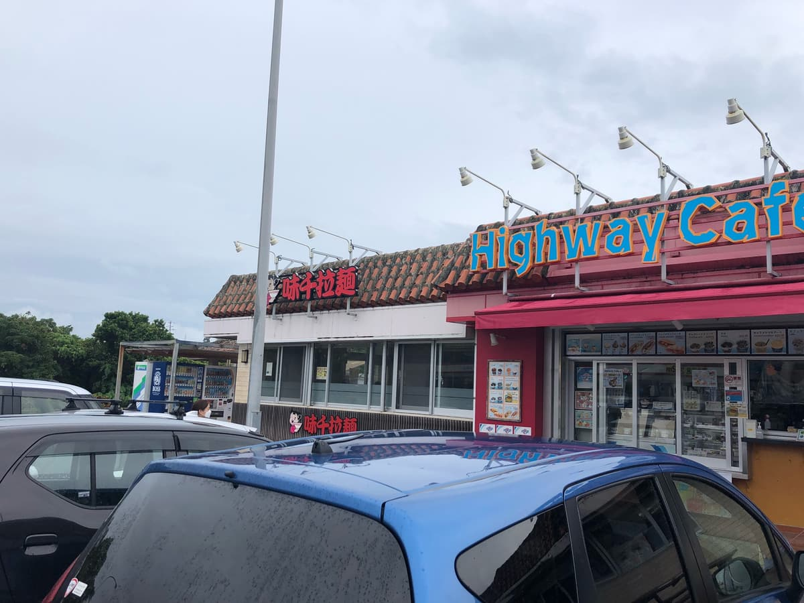
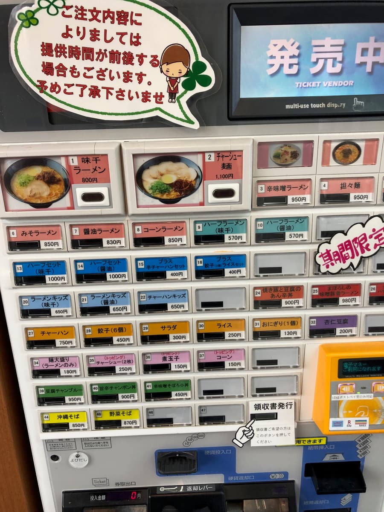
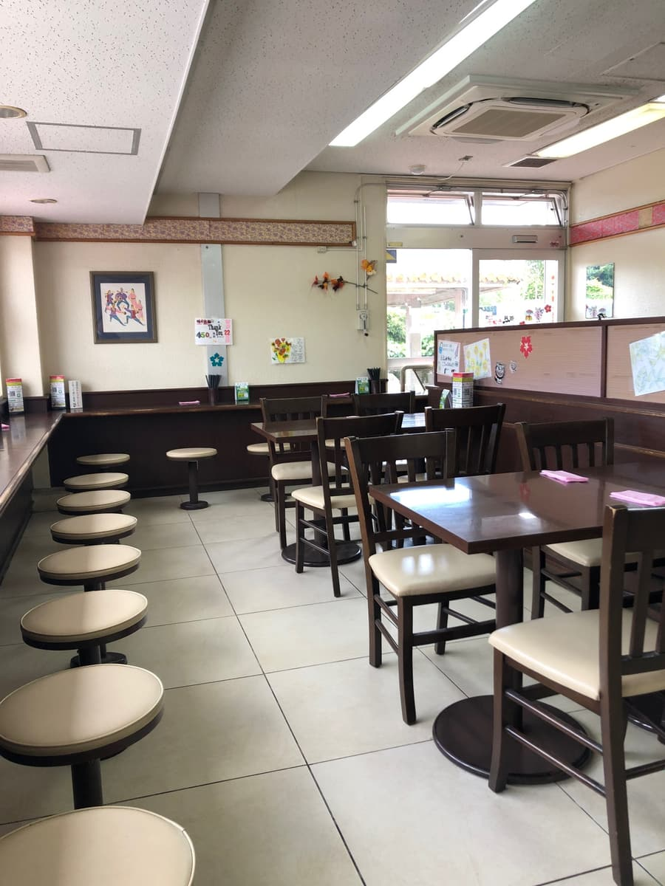
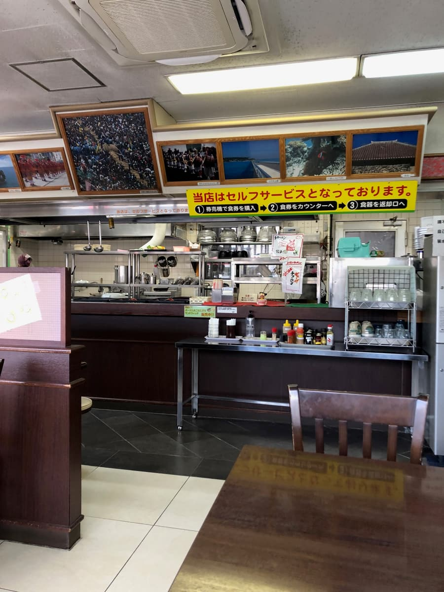
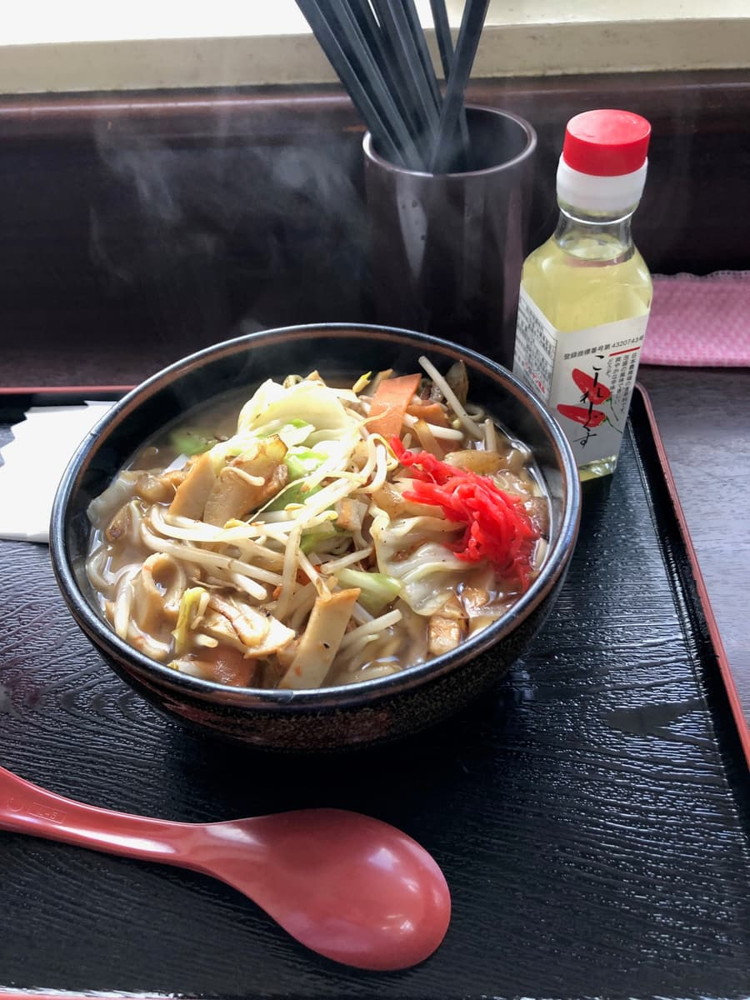
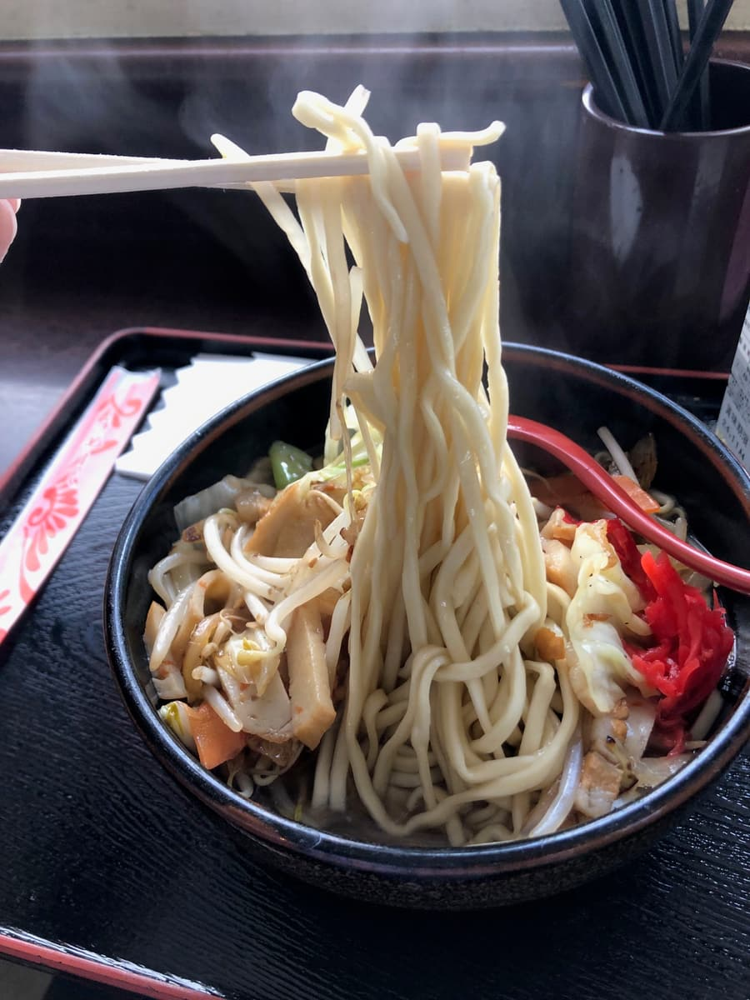
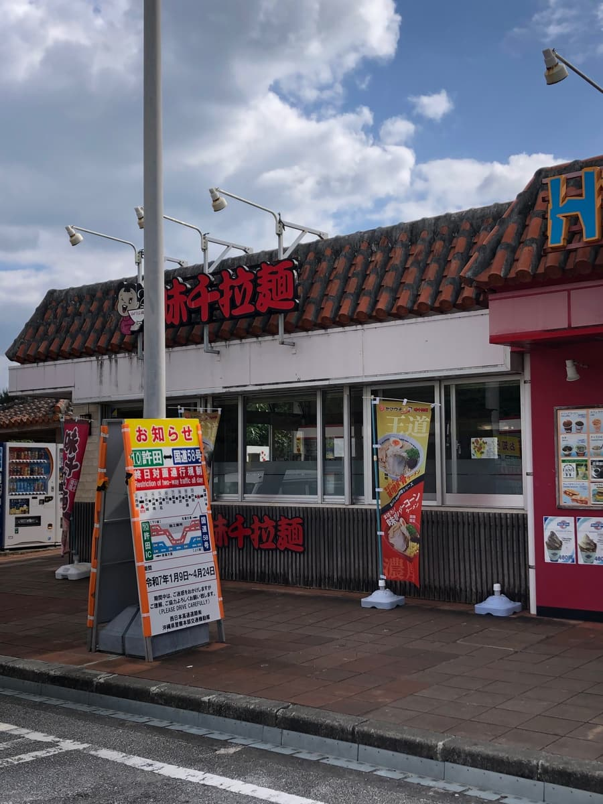
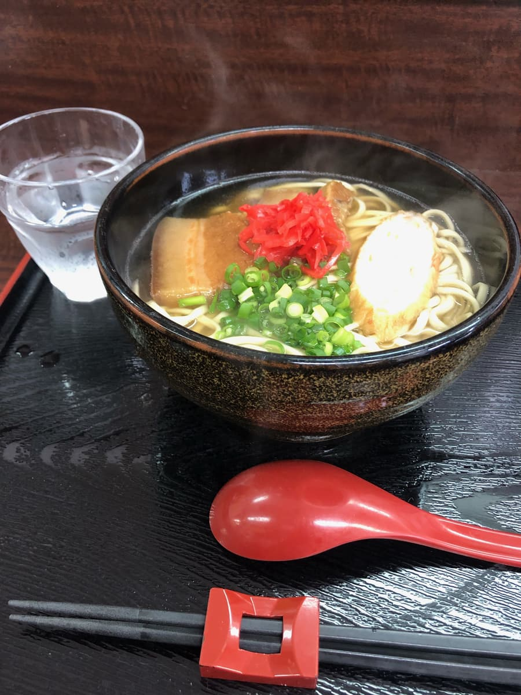

― 2回目の訪問（2025年1月） ―
※こちらの記事は、「Chat gpt 5.1（Thinking）」で作成したものを一部、加筆しました。2025.1に食べに行きました😄 今回は沖縄自動車道の上り・中城SAにある「味千拉麺」さんに寄ってきましたよ〜🚗💨

赤い外観と大きな「ラーメン」の文字、そして赤瓦の屋根がドーンと構えていて、サービスエリアの中でもすぐに目に入りますね。九州・熊本発祥のラーメン屋さんというイメージが強いお店ですが、ここ中城SA店ではしれっと沖縄そばも本格的に提供しているんです。

まずは入口横の券売機で食券購入からスタート🎫 ボタンがびっしり並んでいて、担々麺や辛味噌ラーメン、チャーハンセットまであってかなり悩みそうですが、もちろん「沖縄そば巡り」なので（笑）、「野菜そば」のボタンをポチッと押しました。


食券をカウンターに出して番号札を受け取り、お水をセルフで用意して席へ。店内はテーブル席とカウンター席がバランスよく配置されていて、明るくて清潔感のある雰囲気です☀️ 壁には沖縄らしい写真やポスターが飾られていて、観光途中の休憩スポットらしい、ちょっとほっとする空間。平日のお昼前だったのでお客さんも少なめで、ゆったりとした時間が流れていました。
しばらくすると番号が呼ばれ、カウンターへ取りに行くと、湯気もうもうの「野菜そば」とご対面✨ 黒っぽい器から立ち上る香りは、野菜炒めの香ばしさとカツオだしが混ざり合ったような、なんとも食欲をそそる匂いです。上にはキャベツ、もやし、にんじんなどの野菜炒めが山盛りで、ところどころにお肉やかまぼこも見えます。真っ赤な紅しょうがが中央にちょこんとのっていて、色合いもいい感じ。横にはコーレーグースもちゃんとスタンバイしていて、準備万端といったビジュアルですね。

まずはスープから一口。ベースはしっかりとした鰹だしで、そこに野菜炒めの旨味と油が溶け込んで、じんわりコクのある味わいになっています。口当たりは意外とあっさりめなんですが、後からじわ〜っと旨味が追いかけてくるタイプですね。熊本豚骨ラーメンが看板の「味千拉麺」なので、もっとラーメン寄りかな？と勝手に想像していたんですが、いい意味で裏切られました。ラーメン屋さんがつくる“なんちゃって沖縄そば”ではなく、ちゃんと本格的な沖縄そばのスープに野菜炒めを合わせた感じで、「お、この方向性好きかも」と思いましたね😊

麺は細めのストレートタイプで、やや柔らかめに茹でられていて、ぷにっとした口当たりです。
具材の野菜炒めはしっかり火が通っていて、キャベツの甘みともやしのシャキシャキ感がいいバランス。ところどころに入っているお肉も、主張しすぎずちょうどいい存在感です。紅しょうがを少しずつ混ぜていくと、脂のコクがキュッと締まって味が変化していくのも楽しいですね。途中からコーレーグースを垂らしてみたら、ピリッとした辛さと香りが加わって、また違った表情のスープに変身しました🌶
先日、同じラーメン屋さんの国立劇場内「わざ家」さんで食べた沖縄そばは、どちらかというとラーメン寄りのアレンジ感が強かったんですが、中城SAの「野菜そば」はかなりオーソドックス寄り。同じラーメン屋でもこんなに方向性が違うのかと、ちょっと面白くなりましたね😄 ガツンと個性で押してくるタイプではなく、「普通に美味しくて安心して食べられる一杯」というポジション。ドライブの途中でさっと寄って、サクッとお腹を満たしたいときにはぴったりだと思います。
個人的には、麺がもう少しだけ固めだとさらに好みだったかな〜という気持ちもありますが、スープの鰹の香りもしっかり感じられるし、野菜もたっぷりで食べ応えもありました。
評価（9点/15点）：前回食べた同様、普通に美味しいと思いました。ラーメン屋さんが作る沖縄そばも、沖縄そば専門店に負けてないと思いまし観光観光ドライブで寄った際に如何でしょうか😄
麺 ：★★★☆☆（3）
スープ：★★★☆☆（3）
具 ：★★★☆☆（3）
― 1回目の訪問（2023年6月） ―
2023.6に沖縄自動車道（高速道路）の空港向け（上り）、中城サービスエリアで見つけ、食べてみました😄
高速道路を運転中、相変わらずのノーリサーチで、どこかの沖縄そば屋でお昼を食べようと思っていましたが、「サービスエリアに沖縄そば屋あるかな？」と試しに中城SAへ。
すると、見つけた外の看板は「味千拉麺」。「あー、ラーメン屋さんかぁ」と思いましたが、「もしかしたら、沖縄そばもやっていたりして？」と思い、店内入口へとりあえず向かいました😁
そしたら、店内入口の看板にもちろんメインはラーメンのメニューが多数ですが、いくつかそばメニューも😄
「ラッキー」と思いましたが、普通にラーメンメニューも美味しそう🤤
ラーメン屋なので、ラーメンにしようかと一瞬悩みましたが、沖縄そば巡りを決意した思い（本島内のすべての沖縄そば屋を制覇したい）を思い出し、「沖縄そば」を選択することに(^_^;)


恒例のまずはスープひと飲み😄 本格的な鰹出汁ベースで美味しいと思いました。麺は細麺のストレートタイプ。柔らかくて普通に美味しい。
具は味が染みた柔らかい三枚肉、カマボコ。こちらも普通に😋
評価（9.5点/15点）：普通に美味しいです。ラーメン屋さんが作る沖縄そばも、沖縄そば専門店に負けてないと思いました。こちらのラーメン屋さんはググったら、熊本豚骨ラーメンみたいですね、ですが沖縄そばは豚骨ではなく、鰹ベースなんですね笑 沖縄にはこちらの1店舗のみみたいなので、ドライブで寄った際に如何でしょうか😄
麺 ：★★★☆☆（3）
スープ：★★★✬☆（3.5）
具 ：★★★☆☆（3）